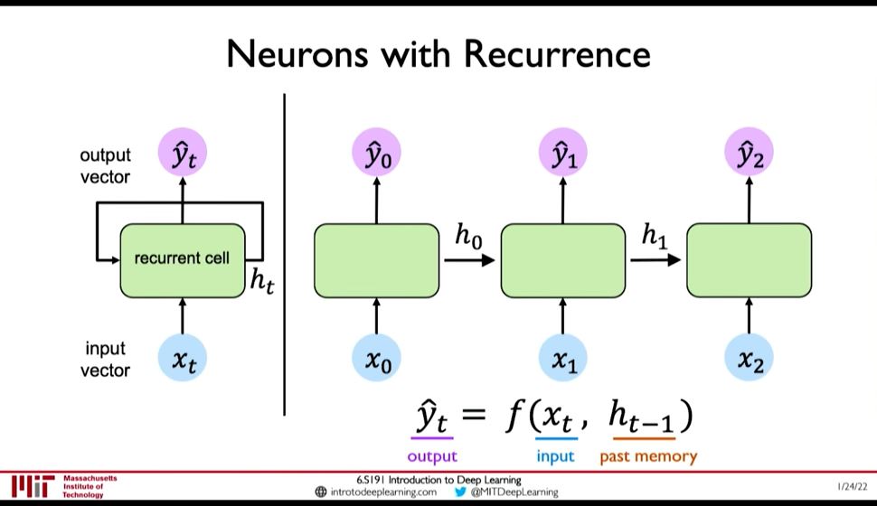
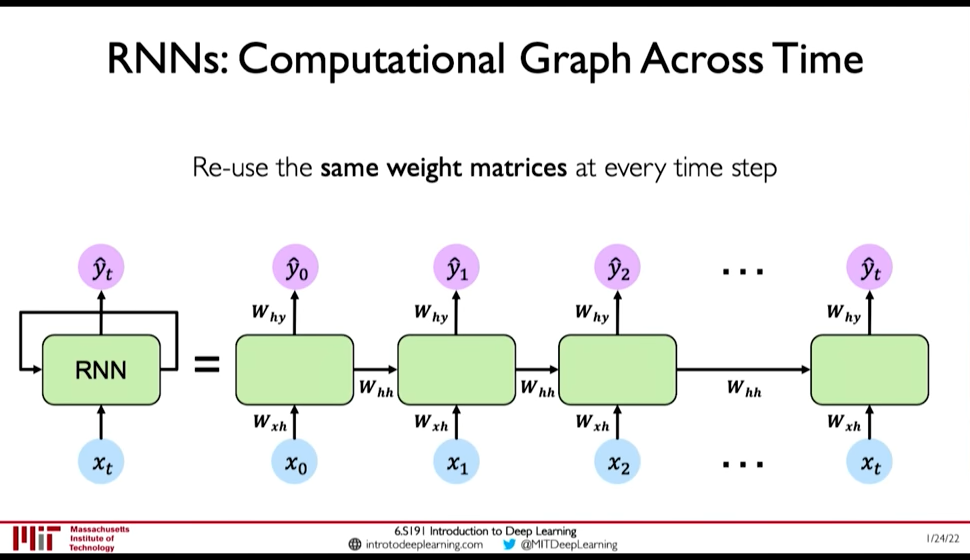
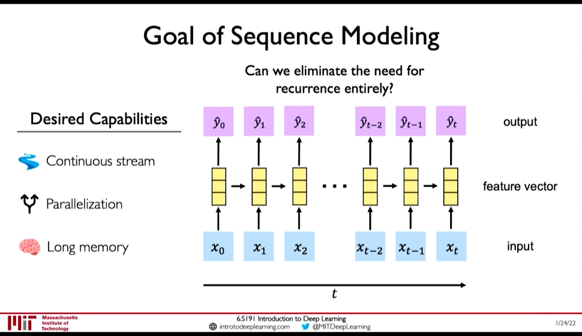

Recurrent neural network
Table of Contents
- 1. Introduction
- 2. Training by Gradient descent
- 3. Training by Global optimization methods
- 4. Limitations of RNN
- 5. Architectures
- 5.1. Fully recurrent
- 5.2. Elman networks and Jordan networks
- 5.3. Hopfield
- 5.4. Echo state
- 5.5. Independently RNN (IndRNN)
- 5.6. Recursive
- 5.7. Neural history compressor
- 5.8. Second order RNNs
- 5.9. Long short-term memory
- 5.10. Gated recurrent unit
- 5.11. Bi-directional
- 5.12. Continuous-time
- 5.13. Hierarchical
- 5.14. Recurrent multilayer perceptron network
- 5.15. Multiple timescales model
- 5.16. Neural Turing machines
- 5.17. Differentiable neural computer
- 5.18. Neural network pushdown automata
- 5.19. Memristive Networks
- 6. Applications
- 7. Page Dumps & Lecture Notes
1. Introduction
RNNs are network specifically for Sequence Modeling.
Consider a single feed forward network, it takes input and gives output at a single timestep. Lets call this the recurrent cell and use it as building block to accept sequence of input (i.e. input/output at timestep)
- We can pass inputs from multiple timesteps, but what we need is to connect the current input to input from previous timesteps
- This means we need to propagate prior computation/information through time: via. Recurrence Relation
- We do this through, Internal Memory or State: \(h_t\)

Figure 1: Recurrent NN
- In RNN, we apply a recurrence relation at every time step to process a sequence
- RNNs have a state, \(h\), that is updated at each time step as a sequence is processed
- \(h_t = f_W(x_t, h_{t-1})\) where the weight \(W\) is same across timesteps but the input \(x_t\) and the memory \(h_t\) change

Figure 2: RNN: Computation Graph Across Time
- \(y_t = f(W_{hy}, h_t)\) why not xt ?
- \(h_t = f(W_{hh}, h_{t-1}, W_{hx}, x_t)\)
1.1. RNN can Exhibit Temporal Dynamic Bheviour
A recurrent neural network (RNN) is a class of artificial neural networks where connections between nodes form a directed graph along a temporal sequence. This allows it to exhibit temporal dynamic behavior. Derived from feedforward neural networks, RNNs can use their internal state (memory) to process variable length sequences of inputs. This makes them applicable to tasks such as unsegmented, connected handwriting recognition or speech recognition.
1.2. Finite Impulse and Infinite Impulse Networks
The term “recurrent neural network” is used indiscriminately to refer to two broad classes of networks with a similar general structure, where
- one is finite impulse: that can be unrolled and replaced with a strictly feedforward neural network
- the other is infinite impulse: a directed cyclic graph that can not be unrolled
1.3. RNN can have Memory Stored States (LSTMs, GRUs)
Both finite impulse and infinite impulse recurrent networks can have additional stored states, and the storage can be under direct control by the neural network. The storage can also be replaced by another network or graph, if that incorporates time delays or has feedback loops. Such controlled states are referred to as gated state or gated memory, and are part of long short-term memory networks (LSTMs) and gated recurrent units. This is also called Feedback Neural Network (FNN).
2. Training by Gradient descent
Gradient descent is a first-order iterative optimization algorithm for finding the minimum of a function.
2.1. BackProagation Through Time (BPTT)
The standard method is called “backpropagation through time” or BPTT, and is a generalization of back-propagation for feed-forward networks.
2.2. Real-Time Recurrent Learning (RTRL)
A more computationally expensive online variant is called “Real-Time Recurrent Learning” or RTRL, which is an instance of automatic differentiation in the forward accumulation mode with stacked tangent vectors. Unlike BPTT, this algorithm is local in time but not local in space.
In this context, local in space means that a unit's weight vector can be updated using only information stored in the connected units and the unit itself such that update complexity of a single unit is linear in the dimensionality of the weight vector. Local in time means that the updates take place continually (online) and depend only on the most recent time step rather than on multiple time steps within a given time horizon as in BPTT. Biological Neural Networks appear to be local with respect to both time and space.
2.3. LSTM for Vanishing gradient problem
2.4. Causal Recursive BackPropagation (CRBP)
The on-line algorithm called causal recursive backpropagation (CRBP), implements and combines BPTT and RTRL paradigms for locally recurrent networks.[77] It works with the most general locally recurrent networks.
3. Training by Global optimization methods
Training the weights in a neural network can be modeled as a non-linear global optimization problem.
The most common global optimization method for training RNNs is genetic algorithms, especially in unstructured networks.
Other global (and/or evolutionary) optimization techniques may be used to seek a good set of weights, such as simulated annealing or particle swarm optimization.
4. Limitations of RNN
RNN as presented above have the following limitations:
- Encoding Bottleneck: RNN need to take long sequence of information and condense it into a fixed representation
- Slow, no parallelization
- Not long memory: ~10, 100 length sequences are ok with LSTM, but not ~1000

Figure 3: Desired Capabilities of RNN @ 0:41:48
In contrast to those limitations, what we want is:
- Continuous Stream
- Parallelization
- Long Memory
Idea 1: Feed everything into dense network: (@ 0:42:52)
- Recurrence is eliminated, but
- Not scalable
- No order
- No long memory
Idea 2: Identify and Attend to what's important (@ 0:42:58)
5. Architectures
5.1. Fully recurrent
Basic RNNs are a network of neuron-like nodes organized into successive layers. Each node in a given layer is connected with a directed (one-way) connection to every other node in the next successive layer.[ citation needed ] Each node (neuron) has a time-varying real-valued activation. Each connection (synapse) has a modifiable real-valued weight.
For supervised learning in discrete time settings, sequences of real-valued input vectors arrive at the input nodes, one vector at a time. At any given time step, each non-input unit computes its current activation (result) as a nonlinear function of the weighted sum of the activations of all units that connect to it. Supervisor-given target activations can be supplied for some output units at certain time steps. For example, if the input sequence is a speech signal corresponding to a spoken digit, the final target output at the end of the sequence may be a label classifying the digit.
In reinforcement learning settings, no teacher provides target signals. Instead, a fitness function or reward function is occasionally used to evaluate the RNN's performance, which influences its input stream through output units connected to actuators that affect the environment. This might be used to play a game in which progress is measured with the number of points won.
Each sequence produces an error as the sum of the deviations of all target signals from the corresponding activations computed by the network. For a training set of numerous sequences, the total error is the sum of the errors of all individual sequences.
5.2. Elman networks and Jordan networks
5.3. Hopfield
The Hopfield network is an RNN in which all connections are symmetric. It requires stationary inputs and is thus not a general RNN, as it does not process sequences of patterns. It guarantees that it will converge. If the connections are trained using Hebbian learning then the Hopfield network can perform as robustcontent-addressable memory, resistant to connection alteration.
5.4. Echo state
5.5. Independently RNN (IndRNN)
5.6. Recursive
A recursive neural network[32] is created by applying the same set of weights recursively over a differentiable graph-like structure by traversing the structure in topological order. Such networks are typically also trained by the reverse mode of automatic differentiation.[33][34] They can process distributed representations of structure, such as logical terms. A special case of recursive neural networks is the RNN whose structure corresponds to a linear chain. Recursive neural networks have been applied to natural language processing.[35] The Recursive Neural Tensor Network uses a tensor-based composition function for all nodes in the tree.[36]
5.7. Neural history compressor
5.8. Second order RNNs
5.9. Long short-term memory
Long short-term memory (LSTM) is a deep learning system that avoids the vanishing gradient problem. LSTM is normally augmented by recurrent gates called “forget gates”.[42] LSTM prevents backpropagated errors from vanishing or exploding.[39] Instead, errors can flow backwards through unlimited numbers of virtual layers unfolded in space. That is, LSTM can learn tasks
[12]
that require memories of events that happened thousands or even millions of discrete time steps earlier. Problem-specific LSTM-like topologies can be evolved.[43] LSTM works even given long delays between significant events and can handle signals that mix low and high frequency components.
Many applications use stacks of LSTM RNNs[44] and train them by Connectionist Temporal Classification (CTC)[45] to find an RNN weight matrix that maximizes the probability of the label sequences in a training set, given the corresponding input sequences. CTC achieves both alignment and recognition
5.10. Gated recurrent unit
5.11. Bi-directional
5.12. Continuous-time
A continuous time recurrent neural network (CTRNN) uses a system of ordinary differential equations to model the effects on a neuron of the incoming spike train.
CTRNNs have been applied to evolutionary robotics where they have been used to address vision,[53] co-operation,[54] and minimal cognitive behaviour.[55]
5.13. Hierarchical
5.14. Recurrent multilayer perceptron network
5.15. Multiple timescales model
5.16. Neural Turing machines
Neural Turing machines (NTMs) are a method of extending recurrent neural networks by coupling them to external memory resources which they can interact with by attentional processes. The combined system is analogous to a Turing machine or Von Neumann architecture but is differentiable end-to-end, allowing it to be efficiently trained with gradient descent.[61]
5.17. Differentiable neural computer
Differentiable neural computers (DNCs) are an extension of Neural Turing machines, allowing for usage of fuzzy amounts of each memory address and a record of chronology.
5.18. Neural network pushdown automata
5.19. Memristive Networks
6. Applications
Applications of Recurrent Neural Networks include:
- Machine Translation
- Robot control
- Time series prediction
- Speech recognition
- Speech synthesis
- Time series anomaly detection
- Rhythm learning
- Music composition
- Grammar learning
- Handwriting recognition
- Human action recognition
- Protein Homology Detection
- Predicting subcellular localization of proteins
- Several prediction tasks in the area of business process management
- Prediction in medical care pathways
7. Page Dumps & Lecture Notes
7.1. Building a custom LSTM cell - Page Dump
:FILE: Saved file
After a careful inspection of the equations, we will build our own LSTM cell to validate our understanding.
It is true that by the moment you start to read about RNN’s, especially with a computer vision background, concepts misleadings start to arise. Less literally:
“Backpropagation with stochastic gradient descent (SGD) does not magically make your network work. Batch normalization does not magically make it converge faster. Recurrent Neural Networks (RNNs) don’t magically let you “plug in” sequences. (…) If you insist on using the technology without understanding how it works you are likely to fail.” ~ Andrey Karpathy (Director of AI at Tesla)
Recurrent cells are neural networks (usually small) for processing sequential data.
As we already know, convolutional layers are specialized for processing grid-structured values (i.e. images).
One can achieve this by connecting the timesteps’ output to the input! This is called sequence unrolling. By processing the whole sequence, we have an algorithm that takes into account the previous states of the sequence. In this manner, we have the first notion of memory (a cell)!
The majority of common recurrent cells can also process sequences of variable length
.
One can view the RNN cell as a common neural network withshared weights for the multiple timesteps.
In terms of training an RNN model, the issue is that now we have a time-sequence. That’s why input unrolling is the only way we can make backpropagation work!
In essence, backpropagation requires a separate layer for each time step with the same weights for all layers (input unrolling)!
In other words, we represent the RNN as a repeated (feedforward) network. More importantly, the time and space complexity to produce the output of the RNN is asymptotically linear to the input length (timesteps). This practical bottleneck introduces the computational limit of training really large sequences.
Finally, siamese networks with shared weights also roughly exploit this concept.
One of the most fundamental works in the field was by Greff et al. 2016 [4]. Briefly, they showed that the proposed variations of RNN do not provide any significant improvement in a large scale study compared to LSTM. Therefore, LSTM is the dominant architecture in RNNs.
Before we begin, note that in all the equations, the weight matrices (W) are indexed, with the first index being the vector that they process, while the second index refers to the representation (i.e. input gate, forget gate).
The depicted weight matrices represent the memory of the cell. You see the input x t is in the current input timestep, while h and c are indexed with the previous timestep.
For the old-school readers, hidden states were referenced in older literature as neurons, but now this term is deprecated.
on, the bias term is part of the linear layer and is simply a trainable vector that is added. The output is also in the dimensionality of the hidden and context/cell vector
Finally, after the 3 linear layers from different inputs, we have a non-linear activation function to introduce non-linearities, which enables the learning of more complex representations. In this case, the sigmoid function is usually used.
Simply, equation 2 is exactly the same thing as equation 1. However, note that the weight matrices are different this time. This means that we get a different set of linear combinations, that represent different things! The equations might be the same, however, we want to model different things, as you will see
We have already learned a representation that corresponds to “forget”, as well as for modeling the “input vector”, f and i, respectively. Let’s keep them aside and first inspect the t a n h parenthesis.
Here, we have another linear combination of the input and hidden vector, which is again totally different! This term is the new cell information, passed by the tanh function so as to introduce non-linearity and stabilize training.
But we don’t want to simply update the cell with the new states. Intuitively, we want to take into account previous states; that’s why we designed RNNs anyway! This is where the calculated input gate vector i comes into play. We filter the new cell info by applying an element-wise multiplication with the input gate vector i (similar to a filter in signal processing).
The forget gate vector comes into play now. Instead of just adding the filtered input info, we first perform an element-wise vector multiplication with the previous context vector. To this end, we would like the model to mimic the forgetting notion of humans as a multiplication filter.
It’s simple! Let’s just take another linear combination! This time, of our 3 vectors x t , h ( t − 1 ) , c t, while we add another non-linear function in the end. Note that, we will now use the calculated new cell state (ct) as opposed to equations 1 and 2.
Imagine that we want to somehow mix the new context vector c t (after another activation!) with the calculated output vector o t. This is exactly the point where we claim that LSTMs model contextual information. Instead of producing an output as shown in equation 4, we further inject the vector called context. Looking back in equations 1 and 2, one can observe that the previous context was involved. In this way, information based on previous timesteps is involved. This notion of context enabled the modeling of temporal correlations in long term sequences.
The 2 cells are more or less like a different layer. To understand this, let’s just think that the context vector is encapsulated inside the cell, while the hidden state vector is the output. Therefore, we just need to plug the output hidden state of the first cell as the input vector to the next one like this:
Taking our discussion one step further, you can model any dimension by recurrence or by convolution. Why choose one over the other? The hidden magic word that you look for, is the receptive field.
In theory, RNN’s can model an infinite size of dimension, which means that their receptive field is infinite. To this end, we still need RNN’s for really long term dependencies such as spoken language and natural language processing.
On the other hand, convolutional neural networks have a finite receptive field [11]. Still, there are a lot of tricks that you can do to increase it, such as dilated convolutions.
the idea of recurrent neural networks can be generalized in multiple dimensions, as described in Graves et al 2007 [7]. In theory, instead of 1D input unrolling we could have a 2D or in general, N-dimensional unrolling.
Another interesting approach is applying recency in graph-structured data [8].
In a compact sentence, I would like to say that the magic of RNNs lies in the ability to model efficiently long-term dependencies via contextual information.
References
- https://en.wikipedia.org/wiki/Recurrent_neural_network
- https://theaisummer.com/understanding-lstm/#lstm-long-short-term-memory-cells